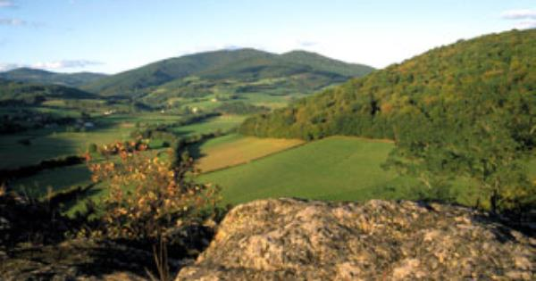

Welkom bij Les Puits
Wij verhuren een idyllisch gelegen vakantiewoning in de Nièvre, het rustige deel van de Bourgogne. Elk seizoen is verrassend mooi en heeft haar eigen charme. Het voorjaar met uitbundig groen en korenbloemvelden, de zomer met krekelconcerten, zwemmen in verkwikkende meertjes en velden vol zonnebloemen, de herfst met bossen in betoverende kleuren en manden vullen met walnoten uit de tuin en de winter met het stoken van de open haard na een winterwandeling. Onze gîte is geschikt voor twee personen. In La Petite Maison, een klein huis naast het hoofdhuis, kunnen 4 kinderen of volwassenen slapen.
